在调试的时候，strace能帮助你追踪到一个程序所执行的系统调用。当你想知道程序和操作系统如何交互的时候，这是极其方便的，比如你想知道执行了哪些系统调用，并且以何种顺序执行。
这个简单而又强大的工具几乎在所有的Linux操作系统上可用，并且可被用来调试大量的程序。
命令用法
让我们看看strace命令如何追踪一个程序的执行情况。
最简单的形式，strace后面可以跟任何命令。它将列出许许多多的系统调用。一开始，我们并不能理解所有的输出，但是如果你正在寻找一些特殊的东西，那么你应该能从输出中发现它。
让我们来看看简单命令ls的系统调用跟踪情况。
raghu@raghu-Linoxide ~ $ strace ls
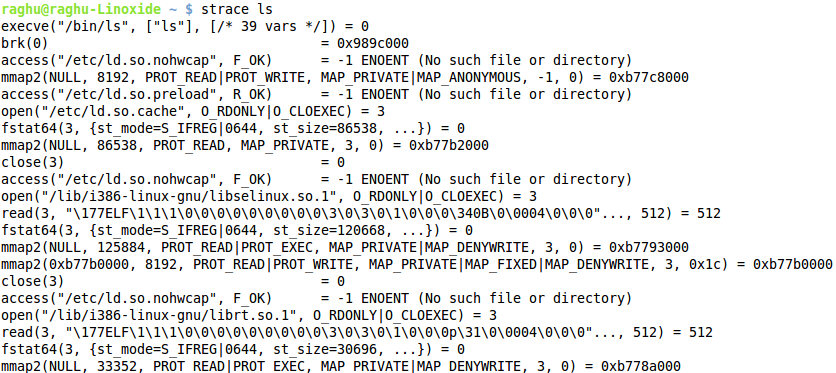
这是strace命令输出的前几行。其他输出被截去了。
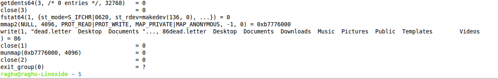
上面的输出部分展示了write系统调用，它把当前目录的列表输出到标准输出。
下面的图片展示了使用ls命令列出的目录内容（没有使用strace）。
raghu@raghu-Linoxide ~ $ ls
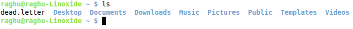
选项1 寻找被程序读取的配置文件
Strace 的用法之一（除了调试某些问题以外）是你能找到被一个程序读取的配置文件。例如，
raghu@raghu-Linoxide ~ $ strace php 2>&1 | grep php.ini
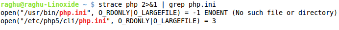
选项2 跟踪指定的系统调用
strace命令的-e选项仅仅被用来展示特定的系统调用（例如，open，write等等）
让我们跟踪一下cat命令的‘open’系统调用。
raghu@raghu-Linoxide ~ $ strace -e open cat dead.letter
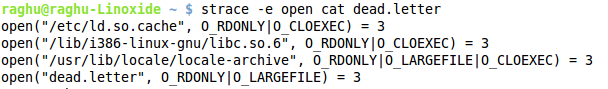
选项3 跟踪进程
strace不但能用在命令上，而且通过使用-p选项能用在运行的进程上。
raghu@raghu-Linoxide ~ $ sudo strace -p 1846
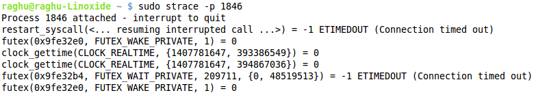
选项4 strace的统计概要
它包括系统调用的概要，执行时间，错误等等。使用-c选项能够以一种整洁的方式展示：
raghu@raghu-Linoxide ~ $ strace -c ls
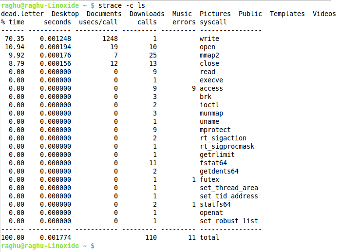
选项5 保存输出结果
通过使用-o选项可以把strace命令的输出结果保存到一个文件中。
raghu@raghu-Linoxide ~ $ sudo strace -o process_strace -p 3229
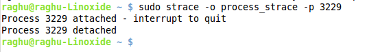
之所以以sudo来运行上面的命令，是为了防止用户ID与所查看进程的所有者ID不匹配的情况。
选项6 显示时间戳
使用-t选项，可以在每行的输出之前添加时间戳。
raghu@raghu-Linoxide ~ $ strace -t ls
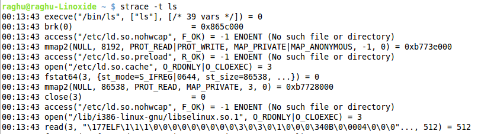
选项7 更精细的时间戳
-tt选项可以展示微秒级别的时间戳。
raghu@raghu-Linoxide ~ $ strace -tt ls
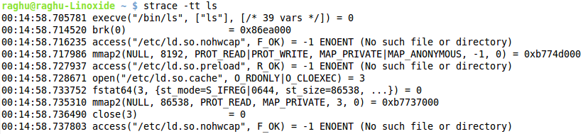
-ttt也可以向上面那样展示微秒级的时间戳，但是它并不是打印当前时间，而是显示自从epoch（译注：1970年1月1日00:00:00 UTC）以来的所经过的秒数。
raghu@raghu-Linoxide ~ $ strace -ttt ls
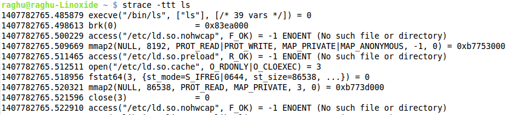
选项8 相对时间
-r选项展示系统调用之间的相对时间戳。
raghu@raghu-Linoxide ~ $ strace -r ls
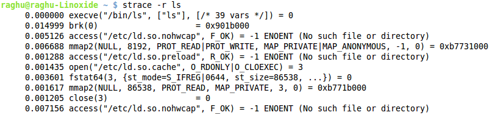
via: http://linoxide.com/linux-command/linux-strace-command-examples/
作者：Raghu 译者：guodongxiaren 校对：wxy